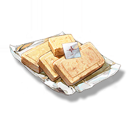

Food Ration Bar
Supplies

Increases the defense of all Resonators in the team by 36% for 15 minutes, only effective for the player's Character in multiplayer games.
A staple food of the Jinzhou Garrison, it is convenient, easy to make, and full of calories. Each serving comes with a message of protection and longing. Although the night is long and endless, Jinzhou is always behind.